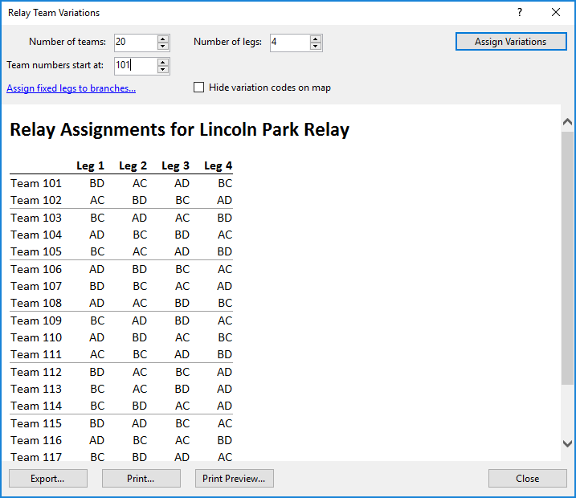

Course/Relay Team Variations...
The Course/Relay Team Variations command is used to have Purple Pen automatically assign variations to team members in a relay.

Number of teams: Enter the number of teams in your relay. If you add additional teams later, you can increase this to add the new teams.
Number of legs: Enter the number of legs each team will run.
Team numbers start at: Enter the number of the first team.
Assign fixed legs to branches... If you wish to have specific legs always assigned to specific branches, click this to make those assignments.
Hide variation codes on map: If this is checked, the control descriptions on the map will not show the variation codes (e.g., "BD") for that particular variation. This can be useful so that competitors cannot easily determine which other competitors are running the same variation. In order to distinguish between maps, you will want to use the Add Text command to add text on the map that displays the team number, team leg, and/or the variation code.
Assign Variations Once you have changes the number of teams and legs, press this to assign the teams. The team assignments will appear in the main part of the window.
Use the buttons at the bottom of the window to save the assignments:
Export... Click this to export the assignments to either a IOF XML version 3 file, for use in other orienteering programs. Or export to a CSV file, for use in spreadsheet programs.
Print... Click this to print the assignments.
Print Preview... Click this to preview printing the assignments.
The team assignments set in this window can also be used to print courses onto maps using the File/Print Courses command. You can print the team and leg numbers on the map by using the Add/Text command and using $(RelayTeam) and $(RelayLeg) in the text.